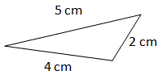

What is triangle
A triangle is a closed figure made up of three line segments.
A triangle consists of three line segments and three angles.
In the figure above, AB, BC, CA are the three line segments and A, B, C are the three angles.
There are three types of triangles based on sides and three based on angles.
Types of triangles based on sides
- Equilateral triangle: A triangle having all the three sides of equal length is an equilateral triangle.Since all sides are equal, all angles are equal too.
- Isosceles triangle: A triangle having two sides of equal length is an Isosceles triangle.The two angles opposite to the equal sides are equal.
- Scalene triangle: A triangle having three sides of different lengths is called a scalene triangle.

Types of triangles based on angles
- Acute-angled triangle: A triangle whose all angles are acute is called an acute-angled triangle or Acute triangle.
- Obtuse-angled triangle: A triangle whose one angle is obtuse is an obtuse-angled triangle or Obtuse triangle.
- Right-angled triangle: A triangle whose one angle is a right-angle is a Right-angled triangle or Right triangle.

In the figure above, the side opposite to the right angle, BC is called the hypotenuse.
For a Right triangle ABC,
BC2 = AB2 + AC2
This is called the Pythagorean Theorem.
In the triangle above, 52 = 42 + 32. Only a triangle that satisfies this condition is a right triangle.
Hence, the Pythagorean Theorem helps to find whether a triangle is Right-angled.
Basic properties of triangles
- The sum of the angles in a triangle is 180°. This is called the angle-sum property.
- The sum of the lengths of any two sides of a triangle is greater than the length of the third side. Similarly, the difference between the lengths of any two sides of a triangle is less than the length of the third side.
- The side opposite to the largest angle is the longest side of the triangle and the side opposite to the smallest angle is the shortest side of the triangle.
In the figure above, B is the largest angle and the side opposite to it (hypotenuse), is the largest side of the triangle
In the figure above, A is the largest angle and the side opposite to it, BC is the largest side of the triangle.
- An exterior angle of a triangle is equal to the sum of its interior opposite angles. This is called the exterior angle property of a triangle.
Here, ACD is the exterior angle to the ABC.
According to the exterior angle property, ACD = CAB + ABC.